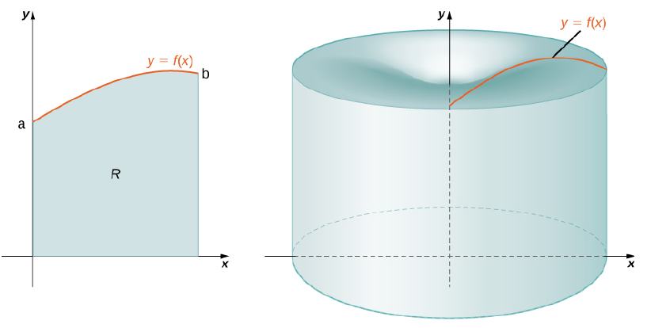
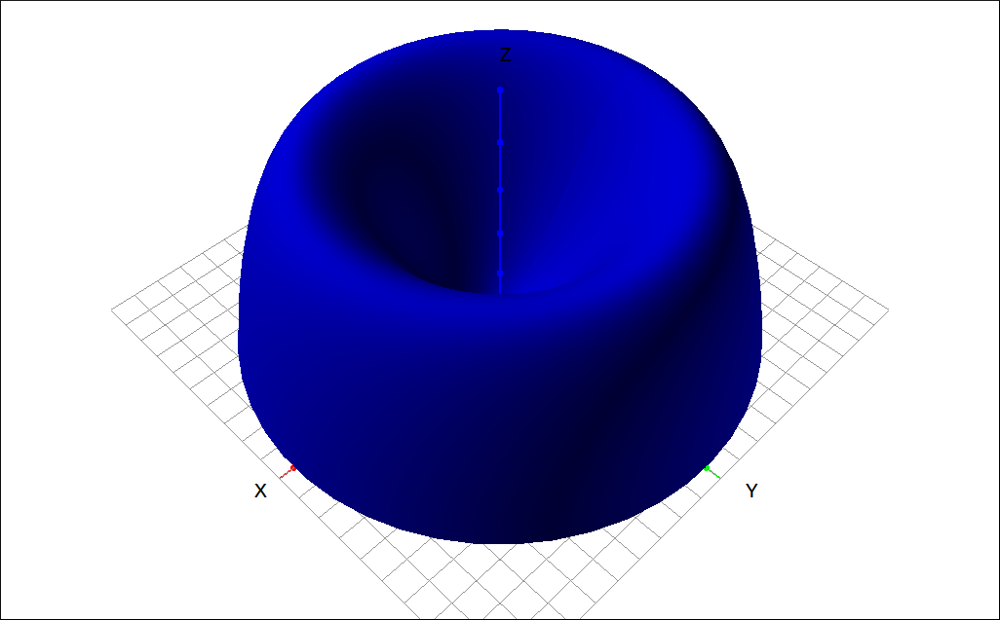

Volumes of Revolution by Cylindrical Shells#
Discussion & Definitions#
As with the disk ans washer method discussed in the precious section the method of cylindrical shells is for finding the volume of a solid of revolution. Depending on the curve or region being revolved this method may be easier to calculate than using disks or washers. There are two big differences between this method and the disk and washer method.
Here we are adding up the volumes of thin cylinders and not volumes of thin disks.
Here we integrate along the coordinate axis perpendicular to the axis of revolution and not parallel to it as with disks and washers.
Theorem: The Method of Cylindrical Shells
Let \(f(x)\) be continuous and nonnegative. Define \(R\) as the region bounded above by the graph of \(f(x)\), below by the x-axis, on the left by the line \(x = a\), and on the right by the line \(x = b\). Then the volume of the solid of revolution formed by revolving \(R\) around the y-axis is given by

Cylindrical Shell Method Visualization#
Note
We can revolve the curve around other axes, using the x-axis is simply interchanging the roles of x and y, given specifically below. We can also rotate the curve around axes \(x = c\) and \(y = c\). In these cases it iw best not to try to use the formula above but thing of it as
Where \(r\) is the radius (or formula for the radius) of the cylindrical slice and \(y\) is the height (or formula for the height) of the cylindrical slice.
Theorem: The Method of Cylindrical Shells for Solids of Revolution around the x-axis
Let \(g(y)\) be continuous and nonnegative. Define \(Q\) as the region bounded on the right by the graph of \(g(y)\), on the left by the y-axis, below by the line \(y = c\), and above by the line \(y = d\). Then, the volume of the solid of revolution formed by revolving \(Q\) around the x-axis is given by
Example: \(f(x) = 2x − x^2\)#
Define \(R\) as the region bounded above by the graph of \(f(x) = 2x − x^2\) and below by the x-axis over the interval \([0, 2]\). Find the volume of the solid of revolution formed by revolving \(R\) around the y-axis.
GeoGebra#
Input the function,
2 pi x (2x - x^2)
Then integrate with Integral(f,0,2). The result is, 8.37758.
CLAE#
Input the function,
2*pi*x*(2*x - x^2)
Then select Calculus > Definite Integral, lower bound of 0 and upper bound of 2 results in \(\frac{8 \pi}{3}\).
To get a visual of the solid, select the 3-D Graphics tab. Click and drag the expression over to the graph. Change the type to Surface of Revolution. Click on the settings tool, change the dependent variable to z, and the function start and end to 0 and 2. You may want to scale the xy-plane a little to see,

\(f(x) = 2x − x^2\)#
Maxima#
Input the function,
kill(all);
cs:2*%pi*x*(2*x - x^2)
Then
integrate(cs, x, 0, 2)
The result is \(\frac{8 \pi}{3}\).